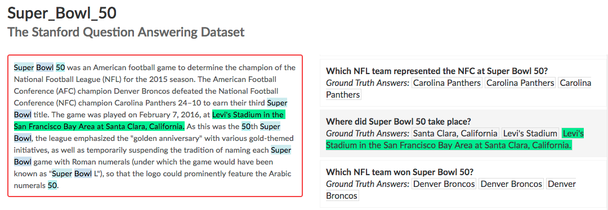
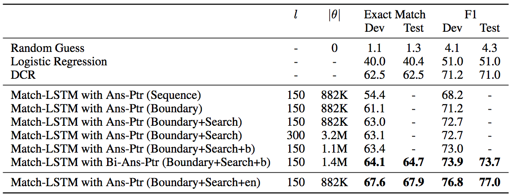
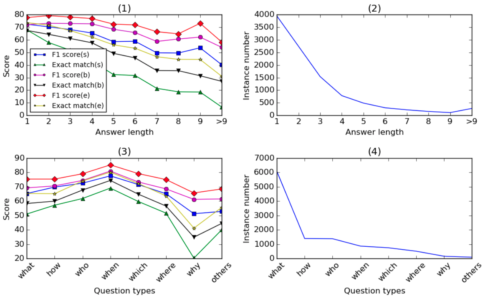

Combine match-LSTM and Pointer Network
Updated:
Shuohang Wang et al. [1] proposed a model based match-LSTM (see my post) and Pointer Network (see my post) to tackle machine comprehension task. The dataset they used is Stanford Question Answering Dataset (SQuAD) releazed in 2016.
SQuAD
SQuAD contains 100,000+ question-answer pairs on 500+ articles, where the answer to every question is a segment of text, or span, from the corresponding reading passage. An example is in Figure 1.

Figure 1
Architecture
Depending on how to use the pointer network, there are two models. One is to only predict the anwser boundary since answers always consecutive words from the passage. The other is to predict every word in the answer. Overall, both models consist of three layers 1) LSTM preprocessing layer 2) match-LSTM layer 3) Answer Pointer layer. An overview of two models are shown in Figure 2.
Figure 2 from [1]
LSTM preprocessing layer
The purpose is to encode the passage and question. Hidden states of passage P and question Q are obtained by
$$
H^q = \mbox{LSTM}(Q) \quad H^p = \mbox{LSTM}(P)
$$
Match-LSTM layer
Like in Match-LSTM, the attention is calculated as below ( Note: there are two more learnable parameters $\vec{b}^{p}$ and $b$ compared with Match-LSTM ):
$$
e_{ij} = \vec{w}^{T}\tanh(\vec{W}^{q}\vec{h}_{j}^{q} + \vec{W}^{p}\vec{h}_{i}^{p} + \vec{b}^{p} + \vec{W}^{m}\vec{h}_{i-1}^{m}) + b
$$
$$
\alpha_{ij}=\mbox{softmax}(e_{ij} ) \quad j \in [1,…,|Q|]
$$
$$
\vec{a}_{i} = \sum_{j=1}^{|Q|} \alpha_{ij}\vec{h}_{j}^{q}
$$
To calculate $\vec{h}_{i+1}^{m}$, we concatenate the hidden state of passage $\vec{h}_{i}^{p}$ and attention $\vec{a}_{i}$ as the input
$$
\vec{x}_{i} = \begin{bmatrix} \vec{h}_{i}^{p} \\ \vec{a}_{i} \end{bmatrix}
$$
After putting it into LSTM function, $\vec{h}_{i+1}^{m}$ is attained by
$$
\vec{h}_{i+1}^{m} = \mbox{LSTM}(\vec{x}_{i},\vec{h}_{i}^{m})
$$
bi-directional LSTM is adapted to get (Note that the parameters are shared between forward and backward LSTMs ):
$$
H^{m} = \begin{bmatrix} \overrightarrow{H^{m}} \\ \overleftarrow{H^{m}} \end{bmatrix}
$$
Answer Pointer layer
This layer once again attends. The input is got by concatenating hidden state of
$$
e_{ij}^{m} = \vec{v}^{T}\tanh(\vec{W}^{m}\vec{h}_{j}^{m} + \vec{W}^{a}\vec{h}_{i-1}^{a} + \vec{b}^{a}) + c
$$
$$
\beta_{ij}=\mbox{softmax}(e_{ij}^{m} ) \quad j \in [0,…,|P|]
$$
$$
P(a_{i}=j|a_{0},a_{1},…,a_{i-1},\theta) = \beta_{ij}
$$
$\vec{h}_{i}^{a}$ is computed as follows ( Note: the input in here is the attention):
$$
\vec{a}_{i}^{m} = \sum_{j=1}^{|P|+1} \beta_{ij}\vec{h}_{j}^{m}
$$
$$
\vec{h}_{i}^{a} = \mbox{LSTM}(\vec{a}_{i}^{m},\vec{h}_{i-1}^{a})
$$
Experiment Settings
- words not found in GloVe are initialized as zero vectors
- hidden layers is set to be 150 or 300
- use ADAMAX with the coefficients $\beta_{1}$ = 0.9 and $\beta_{2}$ = 0.999
- do not use L2-regularization
Analyses
The result in Table 1 showed that 1) Setting the dimensionality of layers to 150 is enough since doubling the dimensionality helps little. 2) beam search should always be considered.
Table 1 from [1]: Here “Search” refers to globally searching the spans with no more than 15 tokens, “b” refers to using bi-directional pre-processing LSTM, and “en” refers to ensemble method.

Figure 3 showed that 1) longer answers are harder to predict for their models 2) their models work the best for “when” questions and worst on “why” questions.

Figure 3 from [1]: Performance breakdown by answer lengths and question types.
Comments
- I am not sure about their motivations to add two learnable biases when compute attentions. But, I personally think at least $b$ can not help and also have doubts on the effect of $\vec{b}^{p}$
- They used the LSTM without output gate because it barely had influence on performance. Maybe they should give the GRU a try, since its structure is much simpler than the LSTM.
References
[1] Shuohang Wang et al. Machine Comprehension Using Match-LSTM and Answer Pointer. 2016
[2] Pranav Rajpurkar et al. SQuAD: 100,000+ questions for machine comprehension of text. 2016